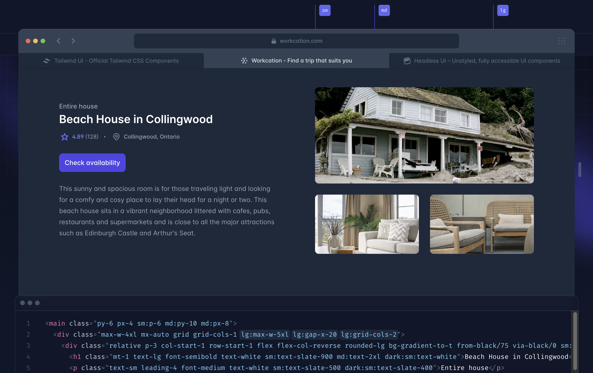

다만 Tailwind CSS 예제 페이지에서는 'lg:max-w-5xl'로 제한하였기 때문에,
1024px 이상으로 폭을 늘일수 없게 막아두었습니다. 그래서 sm, md, lg 분기
만을 사용하였다고 판단했고 정답은 아래와 같습니다.
- 'sm' ➡️ @media (min-width: 640px) { ... }
- 'md' ➡️ @media (min-width: 768px) { ... }
- 'lg' ➡️ @media (min-width: 1024px) { ... }
참조: max-w-5xl ➡️ max-width: 64rem; /* 1024px */
